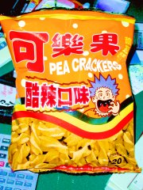

家人全都出去囉!!
這種經驗蠻少的，一年四季幾乎天天家�堻ㄕ酗H。 雖然說我是整天都在自己的房間內混，不過感覺上那是不一樣的。 
中午就出去買了堆垃圾到不行的食物回來吃，這也是很少的經驗。 我平時不大吃零食，這是有預謀的。反正過年嘛，作些不一樣的事情。 @_@
結果....蠻衰的!!像是那包『小心點兒』，買到辣味的，邊吃只好一邊喝柳橙汁， 這樣一搭完完全全地是在受苦受難，不叫過年。另外我最喜歡的可樂果也只有辣味的， 等下打開吃也一定會讓我不爽到極點....@_@
買零食吃是想耗時間。但是，這種時候我不要吃辣味的!! (回音)
征戰寫完了!!簡直是....自己感動到不行~~~ Q_Q (變態)